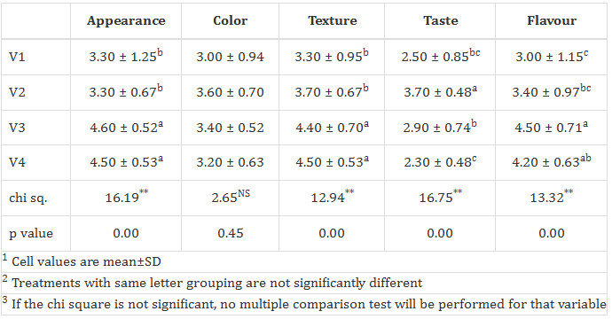
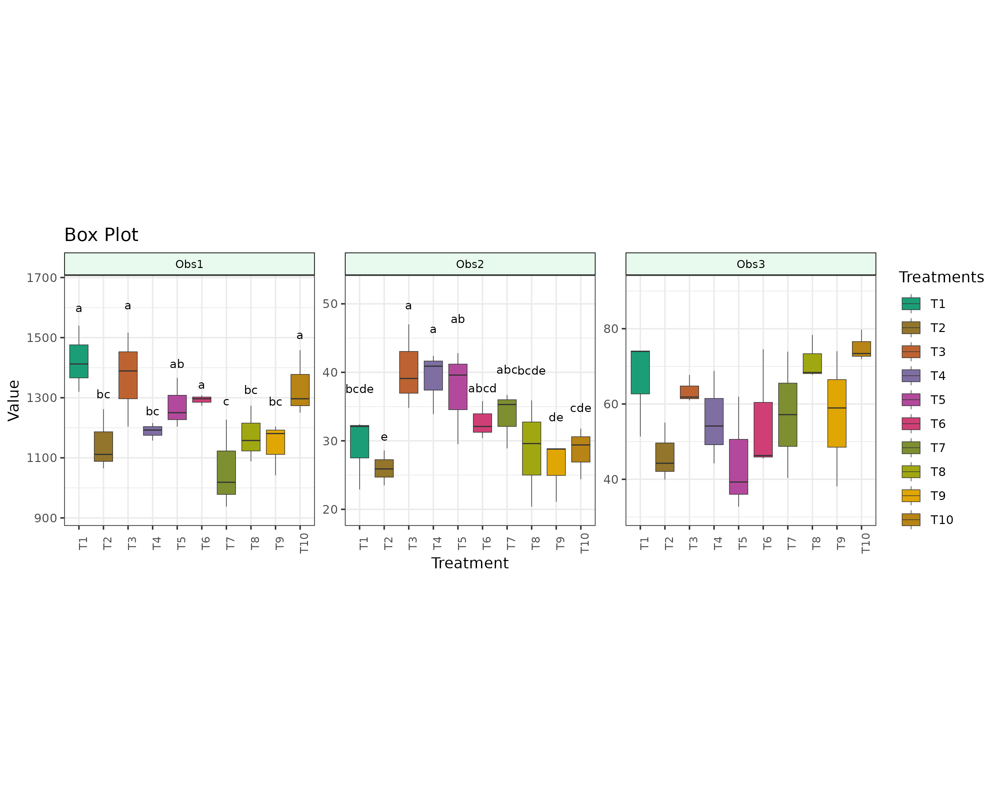

1 Kruskal Wallis Test
The Kruskal-Wallis test is a non-parametric statistical test used to compare the medians of two or more independent groups when the data is not normally distributed or the assumptions of a one-way ANOVA are violated. It’s essentially a non-parametric equivalent of a one-way ANOVA, but instead of comparing means, it compares medians. It is named after William Kruskal and W. Allen Wallis, who developed it in 1952.
In the Kruskal Wallis test, it is enough for the data to be in the form of ordinal variables, which means values that can be ranked or ordered. This is because the test does not use the actual differences between the values. Unlike ANOVA, which compares group means using real quantitative values and assumes normal distribution and equal variances, the Kruskal Wallis test works by converting all observations into ranks and then checking how these ranks are distributed across the groups. This makes the Kruskal Wallis test suitable for situations where the data are not normally distributed or where the measurements are not precise but can still be ordered in a meaningful way. In the illustration in Figure 1.1, you can see ANOVA uses the actual data values, while the Kruskal Wallis test replaces them with their ranks to see if the groups are significantly different.

1.1 Example
A food scientist is evaluating four drink flavours (V1 to V4) based on consumer ratings for five sensory attributes: Appearance, Color, Texture, Taste, and Flavour. Each flavour is rated by five judges, giving five replications per group. A separate Kruskal Wallis test can be performed for each sensory attribute to check if there are significant differences in ratings among the flavours.
An agricultural extension researcher is evaluating the effectiveness of four training methods (T1 to T4) based on farmers’ knowledge gain. Each method is tested on five farmers, and their knowledge is scored after the training. These scores serve as replications. The Kruskal Wallis test can be used to determine if there is a significant difference in knowledge gain among the four training methods.
An agricultural extension researcher is comparing four different communication approaches (C1 to C4) for delivering farm advisories. Each method is tested on 10 farmers, who rate the clarity of the information received. These clarity scores serve as replications. The Kruskal Wallis test can be applied to determine whether there are significant differences in perceived clarity among the four communication methods.
1.2 Assumptions
The Kruskal-Wallis test relies on the following assumptions:
Non-parametric: It does not assume a normal distribution of the data, making it suitable for non-normally distributed data
Independence of Observations: Each sample should be independent of the others, meaning there is no relationship or dependence between the observations within or across group
Ordinal or Continuous Data: The data should be atleast ordinal, meaning it can be ranked, or continuous.
Key Features of Kruskal-Wallis Test
- Non-parametric: Unlike ANOVA, it does not assume normality or equal variances, making it suitable for non-normal data.
- Extension of the Mann-Whitney U test: It is essentially an extension of the Mann-Whitney U test, designed for more than two independent samples.
- Ranking-based: Like the Mann-Whitney U test, the Kruskal-Wallis test relies on ranking the data rather than using raw values.
- Test statistic: The test calculates a statistic based on the ranked data to determine if significant differences exist between the groups.
1.3 Hypotheses
The Kruskal-Wallis test evaluates the following hypotheses:
The population medians of all groups are equal.
At least one population median is different from the others.
Steps in Kruskal-Wallis Test
Step one: Sort and assign ranks to the data
Step two: Add up the ranks for each group
Step three: Calculate the H statistic
Step four: Obtain and interpret the p-value
1.4 The Test Statistic
The Kruskal-Wallis test statistic is calculated as:
\[ \Large H = \frac{12}{N(N+1)} \sum_{i=1}^{k} \frac{R_i^2}{n_i} - 3(N+1) \tag{1.1}\]
Where:
- \(N\) is the total number of observations across all groups.
- \(k\) is the number of groups.
- \(n_i\) is the number of observations in group \(i\).
- \(R_i\) is the sum of ranks for group \(i\).
When there are no ties in the data, \(H\) follows a chi-square distribution with \(k-1\) degrees of freedom. When ties exist, a correction factor is applied.
1.5 Correction for Ties
If there are tied values in the dataset, the test statistic is adjusted using:
\[ \Large H_{corrected} = \frac{H}{1 - \frac{\sum_{i=1}^{G} (t_i^3 - t_i)}{N^3 - N}} \tag{1.2}\]
Where:
- \(G\) is the number of groups of tied ranks.
- \(t_i\) is the number of tied values in the \(i\)-th group.
2 Interpreting the Results
After calculating the H statistic:
Compare the H value to the critical value from a chi-square distribution with k-1 degrees of freedom
If H exceeds the critical value, reject the null hypothesis
Alternatively, compare the p-value to your chosen significance level (typically 0.05)
If you reject the null hypothesis, you can conclude that at least one group is significantly different from the others and proceed for multiple comparison tests.
2.1 Multiple Comparison Test
When the Kruskal-Wallis test is significant, the following post hoc tests are commonly used for pairwise comparisons:
Dunn’s Test
- Dunn’s Test, developed by Olive Dunn in 1964, is primarily used as a post hoc procedure following the Kruskal-Wallis test.
- It performs pairwise comparisons while controlling for the family-wise error rate.
LSD (Least Significant Difference) Test
- Fisher’s LSD test is a parametric post hoc test used after ANOVA to compare all pairwise group differences.
- It does not correct for multiple comparisons, increasing the false positive rate.
2.2 P Adjustment Method
In statistical hypothesis testing, p-values indicate the probability of observing results at least as extreme as those observed, assuming the null hypothesis is true. When multiple tests are conducted, the risk of false positives (Type I errors) increases. P-value adjustment methods address this issue by controlling the overall error rate, ensuring reliable inference in multiple testing scenarios.
You can select different p-adjustment methods:
2.3 Getting Started
2.3.1 Log In to RAISINS
” Head to www.raisins.live and sign in to your account. If you don’t have one, create an account faster than you can say non-parametric! “
2.3.2 Upload the data
Download the model datasets from the RAISINS DATATSETS TAB
Ex : Sensory Evaluation dataset
This is a hypothetical qualitative(categorical) dataset containing four treatments named as Groups (V1, V2, V3, V4), each representing a different product variant, with data collected from 10 judges as replicates per treatment. The dataset includes sensory evaluation scores for five attributes: Appearance, Color, Texture, Taste, and Flavour, each rated on a scale from 1 to 5.
| Groups | Appearance | Color | Texture | Taste | Flavour |
|---|---|---|---|---|---|
| V1 | 4 | 4 | 4 | 3 | 5 |
| V1 | 3 | 3 | 3 | 3 | 3 |
| V1 | 4 | 3 | 4 | 3 | 3 |
| V1 | 5 | 4 | 3 | 1 | 2 |
| V1 | 2 | 1 | 2 | 2 | 2 |
| V2 | 3 | 3 | 4 | 3 | 1 |
| V2 | 2 | 3 | 3 | 3 | 4 |
| V2 | 4 | 4 | 5 | 4 | 4 |
| V2 | 4 | 4 | 4 | 4 | 4 |
| V2 | 4 | 5 | 3 | 4 | 3 |
Create a Dataset in Excel
Want to craft your own RAISINS dataset? USE Microsoft Excel and create your data according to the model dataset’s structure.
Once all these are done, your file is ready. Now save it as CSV file. Upload file by clicking browse in the app
Generating Data in the Application
“RAISINS” application lets you generate a raisins dataset directly within its interface. Here’s how:

Open RAISINS ➡️Navigate to the Create Data Tab➡️ Select the number of Treatments ➡️ Select number of replications➡️Click on Create
A model dataset will be created. Now you may enter the observations manually into the csv file once downloaded, or paste the observations straight into the file provided. Once the file is ready! click on browse and upload the file
Once the data is ready, you are all set to perform KRUSKAL WALLIS TEST. Now browse and upload the file and Click Run Analysis !
{kind=link}
2.4 Results

2.5 Customizable plots

A box plot displays the distribution of data with a five-number summary: minimum, Q1, median, Q3, and maximum. It vividly highlights central tendencies, variability, and outliers with a splash of clarity!
A pairs plot weaves a colorful matrix of scatterplots, revealing pairwise relationships between variables. Diagonals burst with histograms or density plots, showcasing each variable’s distribution.
A bar plot paints categorical data with vibrant bars, their heights dancing to the tune of values or frequencies, perfect for comparing categories with flair.

A connected plot links data points with flowing lines, tracing trends across time or other variables with a dynamic, storytelling vibe.
A mean value plot shines a spotlight on group averages, with error bars adding a touch of drama to show variability or confidence intervals across categories.

A violin plot blends a box plot’s structure with a density plot’s elegance, its curves swaying to reveal data distribution and density with vibrant charm.
2.6 Multivariate and AI
The Kruskal-Wallis test is usually used to compare one variable across several groups. It’s a non-parametric test, which means it doesn’t assume the data follows a normal distribution.Now, imagine you have more than one variable (for example, height and weight), and you still want to compare these across different groups. Multivariate analysis in KRUSKAL WALLIS test helps you to compare different characters simultaneously !
“Don’t worry RAISIN will guide you to perform Multivariate analysis !”
RAISINS is equipped with an AI-powered interpretation feature designed to assist users in comprehending the outcomes of statistical tests and data analysis. This functionality provides clear and concise summaries of analytical results, identifies statistically significant differences between groups, and offers informed suggestions for potential next steps or interpretations.
RAISINS enables users to draw meaningful conclusions without requiring advanced expertise in statistics.
2.7 FAQ’s
Detailed instruction on how to use the app is available under the FAQ’s section!
2.8 User
User details including usage percentage and other billing details is available in the USER tab